Tutorial
Tool selection
PredHPI have four (4) flavors. You can decide to use any of the tools by selecting the proper tab in the navigation tab. Interolog is the default tab.
Interolog methodThe concept from which the module strategy relies upon is the conservation of protein-protein interactions among similar systems, e.g. if A and A'; are orthologs and B and B' are orthologs, then the interactions between A and B (in a certain system) and between A' and B' (in another system) are interologs (Matthews, 2001) . Subsequently, the ortholog proteins obtained through this process are used as query to search against the PPI databases. If there is a match in the PPI database which corresponds to a host and pathogen proteins, that protein pair is predicted as interacting. In practice, the sequences are aligned (host and pathogen sets separately) to the PPI sequences using Diamond BLAST (Buchfink et al., 2015) in PredHPI. We have implemented Diamond because it is a high- throughput program for aligning sequences at up to 20,000 times the speed of normal BLAST with high sensitivity (Buchfink et al., 2015).
Domain-basedThe domain-based module follows a similar logic like Interolog method, although predictions are made against domain-domain interaction (DDI) databases instead of PPI databases. Domains structures are inferred from the host and pathogen protein sequences using the HMMER aligner (Eddy, 2011) , which align the sequences into domain patterns from the Pfam database (Finn et al., 2014) . As a result, this will assign domains to the sequences that contain the specific domain pattern. With the list of domains inferred, a query is performed to search inside the DDI databases for matches between host and pathogen domains. If there is a match, the proteins from which those domains were inferred will be predicted as interacting.
GOsimThis module is divided into two steps; i) Assigning gene ontology terms to the sequences using InterProScan (Jones et al., 2014) , and then ii) Finding the similarities between GO terms sets using GOSemSim (Yu et al., 2010) . A threshold and a similarity value will determine if the protein pair is interacting or not. GOSemSim is a R package that calculates a similarity matrix between the GO terms set of the host and the pathogen sequences. It will combine those values (pairwise similarities between two GO terms set) according to the strategy selected. PredHPI uses Wang method (Wang et al., 2007) to calculate the similarities, as Wang calculation ignores BP, CC and MF sub-ontologies from the GO graph, which is useful in the cases when there is a comparison between two proteins that have GO terms connected from different sub-ontologies.
Phylo-profilingThis module computes the appearance or absence of a certain protein in a wide genome pool. It is well known that interacting proteins are concurrent in presence to execute their functions. This is likely due to co-evolution of proteins connected with the same biological processes. If the co-appearance of both the host protein and pathogen protein are found, it leads to evidence that an interaction occurs. We use binary variables (1 and 0) to indicate whether a given protein is found in the compared genomes or not. These established profiles can be linked by finding the Hamming distance, indicating physical interaction of functional association (Pellegrini et al., 1999).
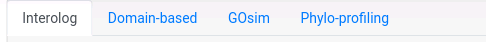Data loading
After you select the tool you want to use for the prediction, the next step is to upload the data. PredHPI supports FASTA format. You can either upload a file or paste your sequences in the text area bellow. If you are using Interolog, you can upload nucleotide or amino acid sequences and the system will detect how to deal with it.
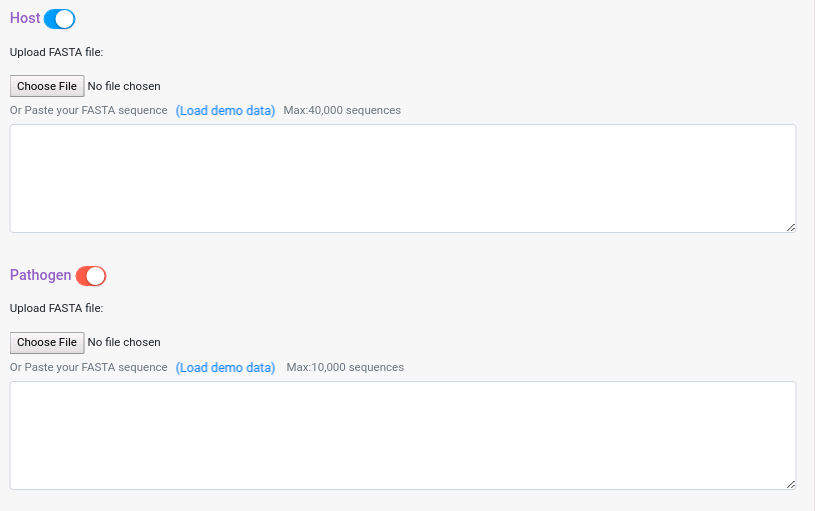If you are using Interolog or Domain-based, you can deactivate one of the two input data panes, in that case the prediction will be run against the template protein of the databases. For Phylo-profiling and GOsim PPI, you will need to provide both datasets. To deactivate one of the panes just click on the button next to the dataset pane name.
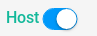 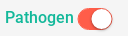Interolog options
There are nine databases with protein-protein interaction templates that you can choose to run Interolog, you can also select multiple databases at once (more information about the databases used in the “Select Protein-Protein Interaction Databases” information button).
Aditionally, you can select which match strategy to use for the interolog alignemnt, you can select to retrieve all the aligments (all-hits) or select the best aligment (best-hit/top-hit).
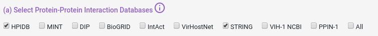 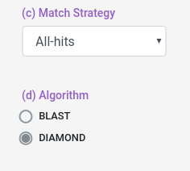You can also select some alignment filters (coverage, identity and e-value) for both Host and Pathogen data sets.
e-value: Value that represent if an aligment is due to chance, lower means more confidence in the aligment.
coverage: How much of the database protein the query protein have to cover (percentually).
identity: How identical the database protein the query protein needs to be (percentually).
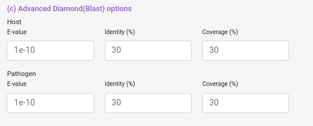Domain-based options
There are two databases with domain-domain interaction templates that you can choose to run Domain-based, (more information about the databases used in the “Select Domain-Domain Interaction Databases” information button). Also you can select the e-value used in HMMScan and the no filters option, which relax the alignment criteria and usually returns more domains associated to the proteins inputted.
e-value: Value that represent if an aligment is due to chance, lower means more confidence in the aligment.
no filters: Hmmscan use a set of parameters (MSV, viterbi, etc) to optimize the heuristics behind the algorithm, changing those parameters will not change the algorithm itself but will change which aligments will be considered at the end for the output, no filters options remove all those filters which makes the algorithm to take longer (much longer) but increase (usually) the number of domains predicted. Consider to use this option only if you are not getting any results with this module.
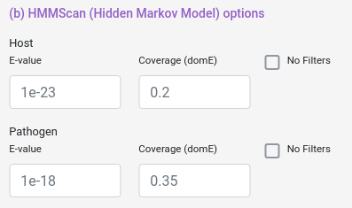GO Sim PPI options
You can select between all orgDB organisms GO graphs in which perform the similarity calculation. You can also select the threshold that determine if a pair of proteins are interacting or not, and the combination strategy used by GoSemSim to calculate the similarity between the GO term sets.
Threshold: from 0 to 1, the similarity proteins GO terms must have to be considered as interacting.
Dataset GO Similarity calculation: "From GOSemSim vignette". For IC-based methods, information of GO term is species specific. We need to calculate IC for all GO terms of a species before we measure semantic similarity.
Combine strategy method: Pair comparison with multiple GO terms associated will need a way to summarize the final single similarity value, you can select the average across all pairs, the maximum, etc.
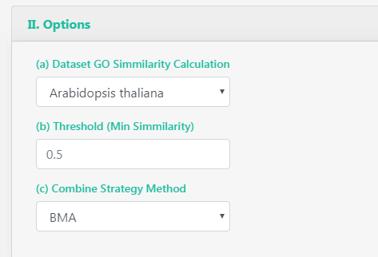Phylogenetic-Profiling options
You can select the genome pool from which the profile is calculated, and the threshold.
Threshold: from 0 to 1, the similarity proteins paterns must have to be considered as interacting.
Pools: BC18, It means Bioconductor 18, which is the pool of genomes made from the 18 Bioconductor Org.DB species annotated. UP82: It means Uniprot 82, which is the pool of genomes made from model uniprot proteomes.
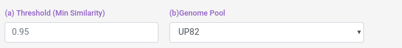And you can also select some blast filters for both Host and Pathogen datasets.
e-value: "From NCBI Website". The Expect value (E) is a parameter that describes the number of hits one can "expect" to see by chance when searching a database of a particular size. It decreases exponentially as the Score (S) of the match increases. Essentially, the E value describes the random background noise.
coverage: How much of the database protein the query protein have to cover (percentually).
identity: How identical the database protein the query protein needs to be (percentually).
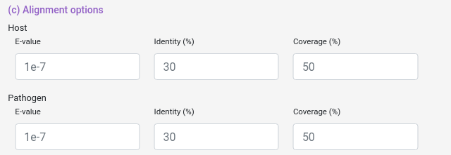Submit
For each module you will have a similar submit section, in which you can provide an email to receive a link to your results when they are done. You can reset the form. There is an icon with general information about the tool and a brief explanation on how it works.
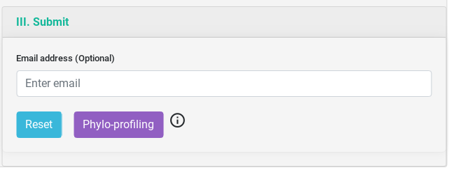Output Example
The result table will change depending of the tool used but they are all similar. On the top, you will have three buttons, the first to download the comprehensive table result which includes information from each specific tool. The second is a link to visualize the network generated by the interacting proteins. And the third, to download the network in JSON.
You can sort the table content by each of the variables and search inside its content.
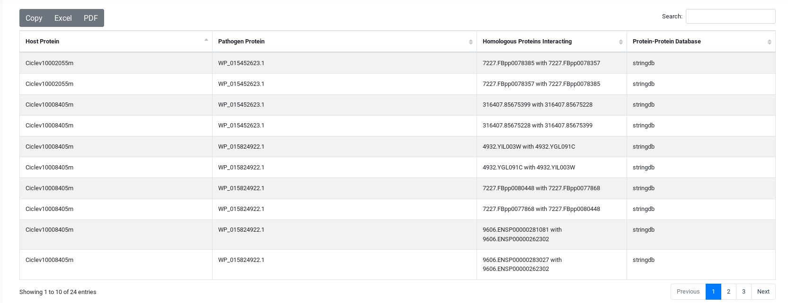And You will have a summary of the job execution.
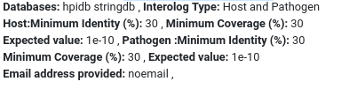Visualization Network Example
When you select the network link, it will display the visualization. Host proteins will be shown in blue and Pathogen proteins in red. For Interolog you will have different edge colors for each database.
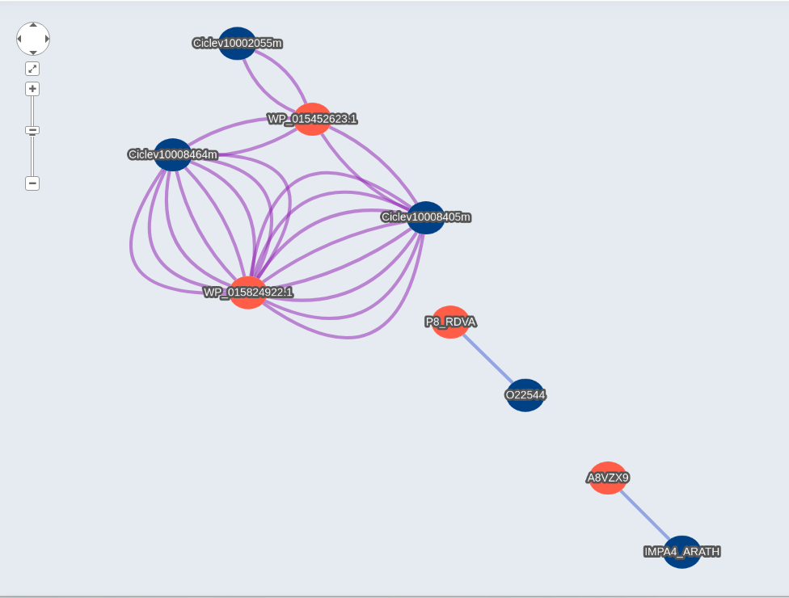When you click a node, it will display different information about the protein, with links to the uniprot and ncbi website to get more information about the inputted protein id. Also you will get similar information for the hit on Interolog, or the domain predicted in Domain-based, the phylogenetic profiling in Phylo-profiling and the GOterms with links to the description, and more.
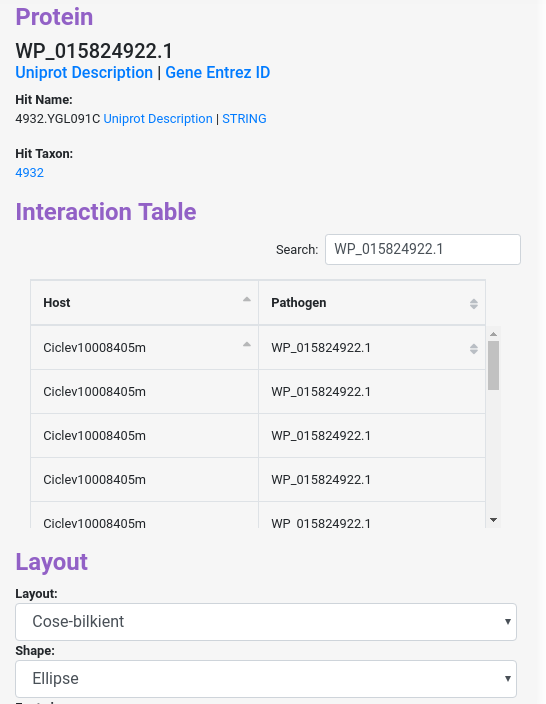Similarly, when you click in one of the edges, it will display information about the interaction between the protein nodes.
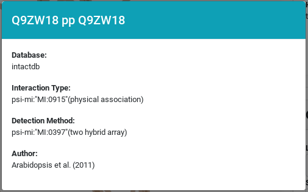You can download the network in json (To be open in Cytoscape or similar software ) format clicking the button and the bottom right of the page. You can also download the network as a PNG image.

Browser compatibility
PredHPI have been tested in the following setups.
| OS | Version | Chrome | Firefox | Safari | Opera |
|---|---|---|---|---|---|
| Linux | CentOS 7 | 72.0.3626.96 | 60.5.0 | n/a | 58.0.3135.53 |
| MacOS | Mojave 10.14.2 | 72.0.3626.121 | 65.0.1 | 12.0.2 | not tested |
| Windows | 7 | 72.0.3626.121 | 63.0.3 | not tested | 45.0.2552.888 |